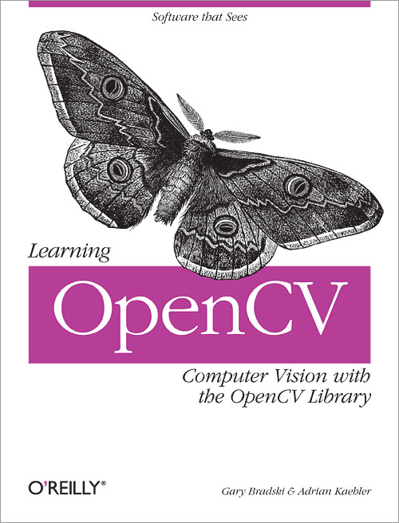
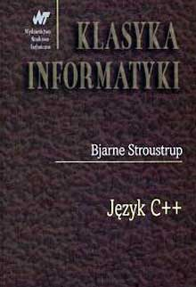

Śledzenie punktów charakterystycznych dłoni w sekwencjach wideo
Wojciech Gawroński (ITS)
Promotor: dr inż. Michał Kawulok
Plan prezentacji
- Bibliografia i Analiza literatury
- Postęp prac
- Środowisko pracy
- "Próbka tekstu"
Literatura
(krótkie podsumowanie)
- 20 pozycji w bibliografii.
- 6 ogólnych dot. C++ i wybranej biblioteki.
- Głównie artykuły naukowe.


Artykuły naukowe
[5] [6] [8] [9] [10] [11]
Postęp prac
(obecnie)
- Gotowe środowisko i podstawowe dane wejściowe.
- Przygotowana wstępna wersja protokołu badawczego.
- Gotowe implementacje algorytmów przepływu optycznego:
- metoda Lucas-Kanade
- metoda Horn-Schunck
- Tworzenie rozdziałów z teorią stojącą za przepływem optycznym i opisem implementacji.
- Tworzenie rozdziału dot. tematyki ogólnej.
Postęp prac
(przyszłość)
- Przygotowanie pozostałej części zbioru z danymi wejściowymi.
- Stworzenie implementacji algorytmu śledzącego opartego na drzewach losowych i uczeniu maszynowym.
- Stworzenie implementacji algorytmu śledzącego opartego o filtry Kalmana i cząsteczkowy.
- Przeprowadzenie i analiza badań (wraz z odpowiadającymi rozdziałami).
Środowisko pracy
"Próbka tekstu"
Pytania?
Dziękuję za uwagę!